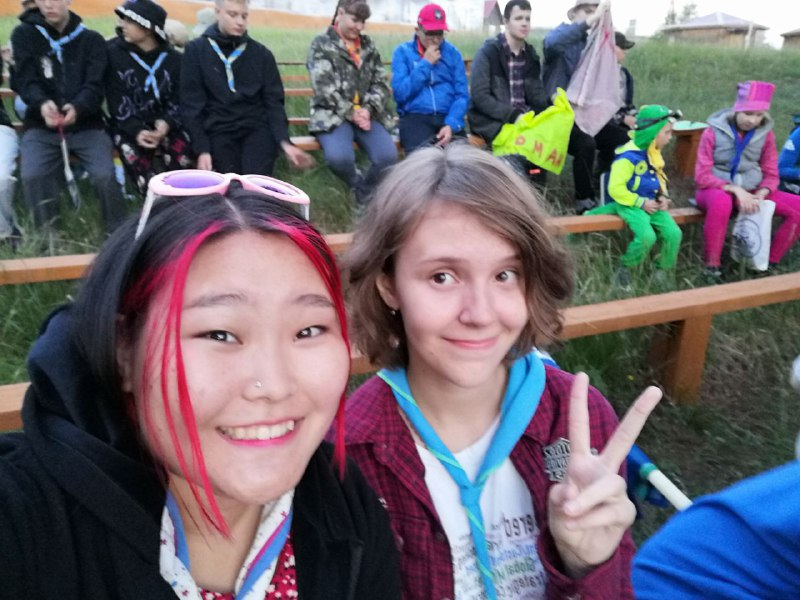
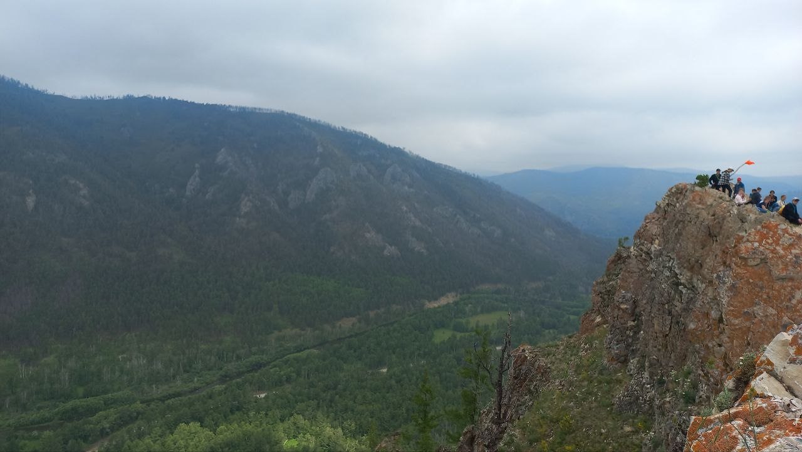
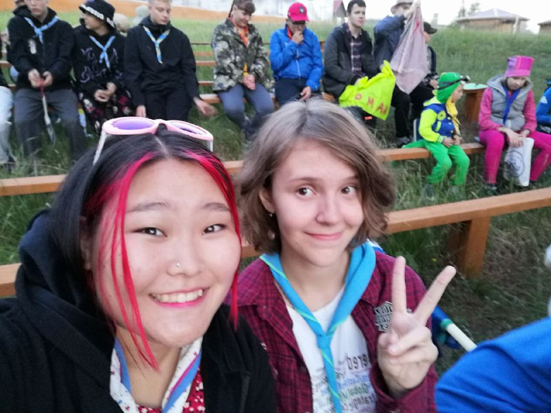
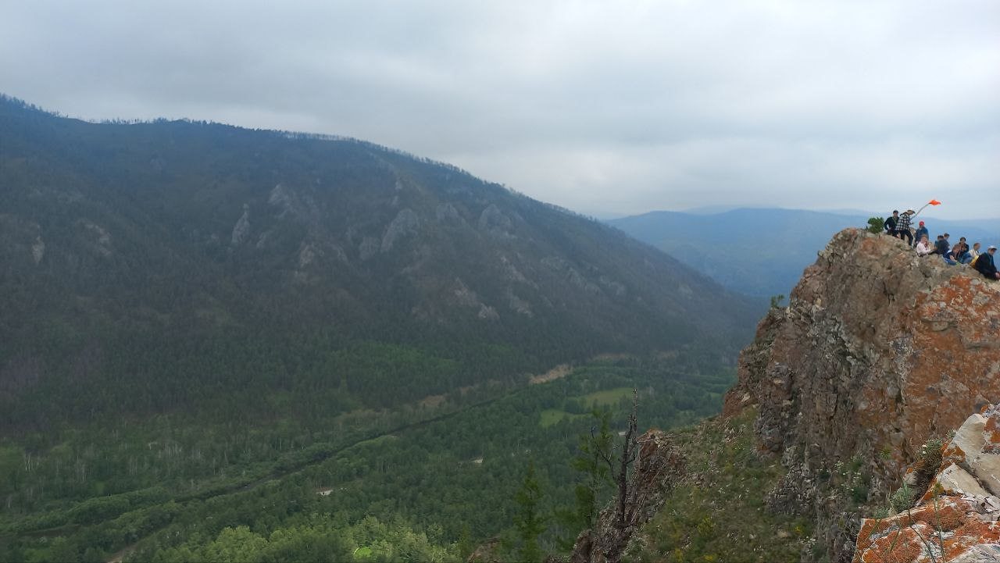

Как-то раз на кружке английского учительница предложила нам поехать в скаутский палаточный лагерь, я согласилась, это было началом большой истории. Меня очень зацепила скаутская идеалогия и жизнь: лес, братсво, испытания - звучит романтично. Я стала частью отряда "Глория" и постепенно своими восторженными рассказами о лагере затащила в него большинство своих друзей. Я посещала ежегодные скаутские мероприятия с 2019 по 2024 год, несколько раз прошла скаутское испытание "рыба" - сутки не издавать ни звука, в свой первый год в лагере прошла испытание "близнецы"-когда сутки ходишь связанный с человеком рукой и ногой. Но,пожалуй,главным событием было мое посвящение в скауты в 2023 году. К этому моменту я знала уже многое о скаутинге, от истории до основ выживания, так что мне разрешили пройти посвящение. Это одно из самых таинственных и ярких событий в жизни того, кому запал в сердце скаутинг. Каждый год 2 июльские недели в лагере становились лучшими в году, это недели полные общения, творчества, движения и красоты байкальской природы.
"Дорогу к счстью прячит в соснах байкальский лес" - из гимна ассоциации "Байкальский скаут"
Фотографии
 


